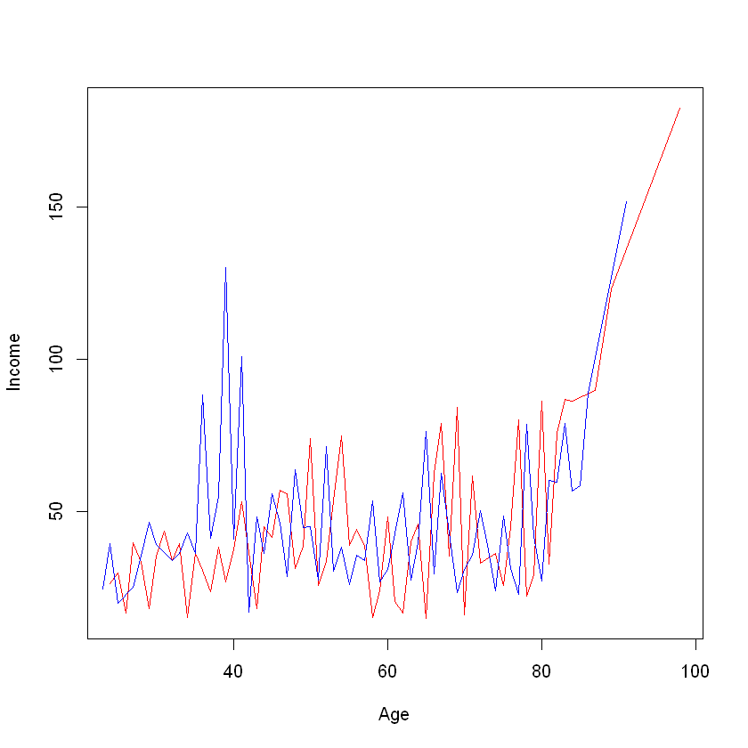

10 Manipulate data with dplyr
You need this packages for code execution:
10.1 What’s dplyr package
The dplyr package is one of the most powerful and popular package in R for data manipulation.
Working with data:
- Figure out what you want to do.
- Describe those tasks in the form of a computer program.
- Execute the program.
The dplyr package makes these steps fast and easy:
- By constraining your options, it helps you think about your data manipulation challenges.
- It provides simple
verbs, functions that correspond to the most common data manipulation tasks, to help you translate your thoughts into code. - It uses efficient backends, so you spend less time waiting for the computer.
Before use you should install package:
Next step is loading package:
dplyr functions work with pipes and expect tidy data. In tidy data:

Alternative way is to load tidyverse package with other attached:
10.2 Exploring data with dplyr
10.2.1 Basic funtions and dataset explore
There are most popular functions in dplyr is listed in table.
| dplyr Function | Description | Equivalent SQL |
|---|---|---|
| select() | Selecting columns (variables) | SELECT |
| filter() | Filter (subset) rows. | WHERE |
| group_by() | Group the data | GROUP BY |
| summarise() | Summarise (or aggregate) data | - |
| arrange() | Sort the data | ORDER BY |
| join() | Joining data frames (tables) | JOIN |
| mutate() | Creating New Variables | COLUMN ALIAS |
For the next sample we are going to use gapminder dataset. Go to gapminder dataset description
The gapminder data frame include six variables:
| variable | meaning |
|---|---|
| country | - |
| continent | - |
| year | - |
| lifeExp | life expectancy at birth |
| pop | total population |
| gdpPercap | per-capita GDP |
Per-capita GDP (Gross domestic product) is given in units of international dollars, a hypothetical unit of currency that has the same purchasing power parity that the U.S. dollar had in the United States at a given point in time – 2005, in this case.
The gapminder data frame is a special kind of data frame: a tibble.
- 'tbl_df'
- 'tbl'
- 'data.frame'
Let’s preview it with functions str(), glimpse(), head(), tail(), summary().
tibble [1,704 x 6] (S3: tbl_df/tbl/data.frame)
$ country : Factor w/ 142 levels "Afghanistan",..: 1 1 1 1 1 1 1 1 1 1 ...
$ continent: Factor w/ 5 levels "Africa","Americas",..: 3 3 3 3 3 3 3 3 3 3 ...
$ year : int [1:1704] 1952 1957 1962 1967 1972 1977 1982 1987 1992 1997 ...
$ lifeExp : num [1:1704] 28.8 30.3 32 34 36.1 ...
$ pop : int [1:1704] 8425333 9240934 10267083 11537966 13079460 14880372 12881816 13867957 16317921 22227415 ...
$ gdpPercap: num [1:1704] 779 821 853 836 740 ...Rows: 1,704
Columns: 6
$ country <fct> "Afghanistan", "Afghanistan", "Afghanistan", "Afghanistan", ~
$ continent <fct> Asia, Asia, Asia, Asia, Asia, Asia, Asia, Asia, Asia, Asia, ~
$ year <int> 1952, 1957, 1962, 1967, 1972, 1977, 1982, 1987, 1992, 1997, ~
$ lifeExp <dbl> 28.801, 30.332, 31.997, 34.020, 36.088, 38.438, 39.854, 40.8~
$ pop <int> 8425333, 9240934, 10267083, 11537966, 13079460, 14880372, 12~
$ gdpPercap <dbl> 779.4453, 820.8530, 853.1007, 836.1971, 739.9811, 786.1134, ~| country | continent | year | lifeExp | pop | gdpPercap |
|---|---|---|---|---|---|
| <fct> | <fct> | <int> | <dbl> | <int> | <dbl> |
| Afghanistan | Asia | 1952 | 28.801 | 8425333 | 779.4453 |
| Afghanistan | Asia | 1957 | 30.332 | 9240934 | 820.8530 |
| Afghanistan | Asia | 1962 | 31.997 | 10267083 | 853.1007 |
| Afghanistan | Asia | 1967 | 34.020 | 11537966 | 836.1971 |
| Afghanistan | Asia | 1972 | 36.088 | 13079460 | 739.9811 |
| Afghanistan | Asia | 1977 | 38.438 | 14880372 | 786.1134 |
| country | continent | year | lifeExp | pop | gdpPercap |
|---|---|---|---|---|---|
| <fct> | <fct> | <int> | <dbl> | <int> | <dbl> |
| Zimbabwe | Africa | 1982 | 60.363 | 7636524 | 788.8550 |
| Zimbabwe | Africa | 1987 | 62.351 | 9216418 | 706.1573 |
| Zimbabwe | Africa | 1992 | 60.377 | 10704340 | 693.4208 |
| Zimbabwe | Africa | 1997 | 46.809 | 11404948 | 792.4500 |
| Zimbabwe | Africa | 2002 | 39.989 | 11926563 | 672.0386 |
| Zimbabwe | Africa | 2007 | 43.487 | 12311143 | 469.7093 |
country continent year lifeExp
Afghanistan: 12 Africa :624 Min. :1952 Min. :23.60
Albania : 12 Americas:300 1st Qu.:1966 1st Qu.:48.20
Algeria : 12 Asia :396 Median :1980 Median :60.71
Angola : 12 Europe :360 Mean :1980 Mean :59.47
Argentina : 12 Oceania : 24 3rd Qu.:1993 3rd Qu.:70.85
Australia : 12 Max. :2007 Max. :82.60
(Other) :1632
pop gdpPercap
Min. :6.001e+04 Min. : 241.2
1st Qu.:2.794e+06 1st Qu.: 1202.1
Median :7.024e+06 Median : 3531.8
Mean :2.960e+07 Mean : 7215.3
3rd Qu.:1.959e+07 3rd Qu.: 9325.5
Max. :1.319e+09 Max. :113523.1
10.2.2 filter() function
| country | continent | year | lifeExp | pop | gdpPercap |
|---|---|---|---|---|---|
| <fct> | <fct> | <int> | <dbl> | <int> | <dbl> |
| Austria | Europe | 1952 | 66.800 | 6927772 | 6137.076 |
| Austria | Europe | 1957 | 67.480 | 6965860 | 8842.598 |
| Austria | Europe | 1962 | 69.540 | 7129864 | 10750.721 |
| Austria | Europe | 1967 | 70.140 | 7376998 | 12834.602 |
| Austria | Europe | 1972 | 70.630 | 7544201 | 16661.626 |
| Austria | Europe | 1977 | 72.170 | 7568430 | 19749.422 |
| Austria | Europe | 1982 | 73.180 | 7574613 | 21597.084 |
| Austria | Europe | 1987 | 74.940 | 7578903 | 23687.826 |
| Austria | Europe | 1992 | 76.040 | 7914969 | 27042.019 |
| Austria | Europe | 1997 | 77.510 | 8069876 | 29095.921 |
| Austria | Europe | 2002 | 78.980 | 8148312 | 32417.608 |
| Austria | Europe | 2007 | 79.829 | 8199783 | 36126.493 |
filter() takes logical expressions and returns the rows for which all are TRUE.
| country | continent | year | lifeExp | pop | gdpPercap |
|---|---|---|---|---|---|
| <fct> | <fct> | <int> | <dbl> | <int> | <dbl> |
| Afghanistan | Asia | 1952 | 28.801 | 8425333 | 779.4453 |
| Afghanistan | Asia | 1957 | 30.332 | 9240934 | 820.8530 |
| Angola | Africa | 1952 | 30.015 | 4232095 | 3520.6103 |
| Gambia | Africa | 1952 | 30.000 | 284320 | 485.2307 |
| Rwanda | Africa | 1992 | 23.599 | 7290203 | 737.0686 |
| Sierra Leone | Africa | 1952 | 30.331 | 2143249 | 879.7877 |
# task: select Austria only and year after 1980
filter(gapminder, country == "Austria", year > 1980)| country | continent | year | lifeExp | pop | gdpPercap |
|---|---|---|---|---|---|
| <fct> | <fct> | <int> | <dbl> | <int> | <dbl> |
| Austria | Europe | 1982 | 73.180 | 7574613 | 21597.08 |
| Austria | Europe | 1987 | 74.940 | 7578903 | 23687.83 |
| Austria | Europe | 1992 | 76.040 | 7914969 | 27042.02 |
| Austria | Europe | 1997 | 77.510 | 8069876 | 29095.92 |
| Austria | Europe | 2002 | 78.980 | 8148312 | 32417.61 |
| Austria | Europe | 2007 | 79.829 | 8199783 | 36126.49 |
| country | continent | year | lifeExp | pop | gdpPercap |
|---|---|---|---|---|---|
| <fct> | <fct> | <int> | <dbl> | <int> | <dbl> |
| Austria | Europe | 1952 | 66.800 | 6927772 | 6137.076 |
| Austria | Europe | 1957 | 67.480 | 6965860 | 8842.598 |
| Austria | Europe | 1962 | 69.540 | 7129864 | 10750.721 |
| Austria | Europe | 1967 | 70.140 | 7376998 | 12834.602 |
| Austria | Europe | 1972 | 70.630 | 7544201 | 16661.626 |
| Austria | Europe | 1977 | 72.170 | 7568430 | 19749.422 |
| Austria | Europe | 1982 | 73.180 | 7574613 | 21597.084 |
| Austria | Europe | 1987 | 74.940 | 7578903 | 23687.826 |
| Austria | Europe | 1992 | 76.040 | 7914969 | 27042.019 |
| Austria | Europe | 1997 | 77.510 | 8069876 | 29095.921 |
| Austria | Europe | 2002 | 78.980 | 8148312 | 32417.608 |
| Austria | Europe | 2007 | 79.829 | 8199783 | 36126.493 |
| Belgium | Europe | 1952 | 68.000 | 8730405 | 8343.105 |
| Belgium | Europe | 1957 | 69.240 | 8989111 | 9714.961 |
| Belgium | Europe | 1962 | 70.250 | 9218400 | 10991.207 |
| Belgium | Europe | 1967 | 70.940 | 9556500 | 13149.041 |
| Belgium | Europe | 1972 | 71.440 | 9709100 | 16672.144 |
| Belgium | Europe | 1977 | 72.800 | 9821800 | 19117.974 |
| Belgium | Europe | 1982 | 73.930 | 9856303 | 20979.846 |
| Belgium | Europe | 1987 | 75.350 | 9870200 | 22525.563 |
| Belgium | Europe | 1992 | 76.460 | 10045622 | 25575.571 |
| Belgium | Europe | 1997 | 77.530 | 10199787 | 27561.197 |
| Belgium | Europe | 2002 | 78.320 | 10311970 | 30485.884 |
| Belgium | Europe | 2007 | 79.441 | 10392226 | 33692.605 |
Lets rewrite initial code and record it to the variable/data.frame:
10.2.3 Pipe (%>%) operator
%>% is pipe operator. The pipe operator takes the thing on the left-hand-side and pipes it into the function call on the right-hand-side – literally, drops it in as the first argument.
head() function without pipe and top 4 items:
In R version before 4.1.0
pipe%>%operator is not a language build-in and you should installmagrittrpackage:
Pipe opertor in R 4.1+
|>, using this is preferable
| country | continent | year | lifeExp | pop | gdpPercap |
|---|---|---|---|---|---|
| <fct> | <fct> | <int> | <dbl> | <int> | <dbl> |
| Afghanistan | Asia | 1952 | 28.801 | 8425333 | 779.4453 |
| Afghanistan | Asia | 1957 | 30.332 | 9240934 | 820.8530 |
| Afghanistan | Asia | 1962 | 31.997 | 10267083 | 853.1007 |
| Afghanistan | Asia | 1967 | 34.020 | 11537966 | 836.1971 |
head() function with pipe and top 4 items:
| country | continent | year | lifeExp | pop | gdpPercap |
|---|---|---|---|---|---|
| <fct> | <fct> | <int> | <dbl> | <int> | <dbl> |
| Afghanistan | Asia | 1952 | 28.801 | 8425333 | 779.4453 |
| Afghanistan | Asia | 1957 | 30.332 | 9240934 | 820.8530 |
| Afghanistan | Asia | 1962 | 31.997 | 10267083 | 853.1007 |
| Afghanistan | Asia | 1967 | 34.020 | 11537966 | 836.1971 |
Output is the same. So, let’s rewrire filtering for Austria with pipe:
| country | continent | year | lifeExp | pop | gdpPercap |
|---|---|---|---|---|---|
| <fct> | <fct> | <int> | <dbl> | <int> | <dbl> |
| Austria | Europe | 1952 | 66.800 | 6927772 | 6137.076 |
| Austria | Europe | 1957 | 67.480 | 6965860 | 8842.598 |
| Austria | Europe | 1962 | 69.540 | 7129864 | 10750.721 |
| Austria | Europe | 1967 | 70.140 | 7376998 | 12834.602 |
| Austria | Europe | 1972 | 70.630 | 7544201 | 16661.626 |
| Austria | Europe | 1977 | 72.170 | 7568430 | 19749.422 |
| Austria | Europe | 1982 | 73.180 | 7574613 | 21597.084 |
| Austria | Europe | 1987 | 74.940 | 7578903 | 23687.826 |
| Austria | Europe | 1992 | 76.040 | 7914969 | 27042.019 |
| Austria | Europe | 1997 | 77.510 | 8069876 | 29095.921 |
| Austria | Europe | 2002 | 78.980 | 8148312 | 32417.608 |
| Austria | Europe | 2007 | 79.829 | 8199783 | 36126.493 |
# add more conditions in filter
austria <- gapminder %>% filter(country == "Austria", year > 2000)
austria| country | continent | year | lifeExp | pop | gdpPercap |
|---|---|---|---|---|---|
| <fct> | <fct> | <int> | <dbl> | <int> | <dbl> |
| Austria | Europe | 2002 | 78.980 | 8148312 | 32417.61 |
| Austria | Europe | 2007 | 79.829 | 8199783 | 36126.49 |
10.2.4 select() function
Use select() to subset the data on variables/columns by names or index. You also can define order of columns with select().
| year | country | pop |
|---|---|---|
| <int> | <fct> | <int> |
| 1952 | Afghanistan | 8425333 |
| 1957 | Afghanistan | 9240934 |
| 1962 | Afghanistan | 10267083 |
| 1967 | Afghanistan | 11537966 |
| 1972 | Afghanistan | 13079460 |
| 1977 | Afghanistan | 14880372 |
| 1982 | Afghanistan | 12881816 |
| 1987 | Afghanistan | 13867957 |
| 1992 | Afghanistan | 16317921 |
| 1997 | Afghanistan | 22227415 |
Lets combine few functions with pipe (%>%):
Finally, lest extend our filtering:
# compare dplyr syntax with base R call
gapminder[gapminder$country == "Austria", c("year", "pop", "lifeExp")]
gapminder %>%
filter(country == "Austria") %>%
select(year, pop, lifeExp)| year | pop | lifeExp |
|---|---|---|
| <int> | <int> | <dbl> |
| 1952 | 6927772 | 66.800 |
| 1957 | 6965860 | 67.480 |
| 1962 | 7129864 | 69.540 |
| 1967 | 7376998 | 70.140 |
| 1972 | 7544201 | 70.630 |
| 1977 | 7568430 | 72.170 |
| 1982 | 7574613 | 73.180 |
| 1987 | 7578903 | 74.940 |
| 1992 | 7914969 | 76.040 |
| 1997 | 8069876 | 77.510 |
| 2002 | 8148312 | 78.980 |
| 2007 | 8199783 | 79.829 |
| year | pop | lifeExp |
|---|---|---|
| <int> | <int> | <dbl> |
| 1952 | 6927772 | 66.800 |
| 1957 | 6965860 | 67.480 |
| 1962 | 7129864 | 69.540 |
| 1967 | 7376998 | 70.140 |
| 1972 | 7544201 | 70.630 |
| 1977 | 7568430 | 72.170 |
| 1982 | 7574613 | 73.180 |
| 1987 | 7578903 | 74.940 |
| 1992 | 7914969 | 76.040 |
| 1997 | 8069876 | 77.510 |
| 2002 | 8148312 | 78.980 |
| 2007 | 8199783 | 79.829 |
You can remove some columns using minus(operator) and add few filter conditions:
austria <- gapminder %>%
filter(country == "Austria", year > 2000) %>%
select(-continent, -gdpPercap) %>%
head()
austria| country | year | lifeExp | pop |
|---|---|---|---|
| <fct> | <int> | <dbl> | <int> |
| Austria | 2002 | 78.980 | 8148312 |
| Austria | 2007 | 79.829 | 8199783 |
You can insert different conditions about columns you need to select.
gapminder %>%
select(!where(is.numeric)) %>% # its 1704 records, because of repeating some records
slice(1:5)| country | continent |
|---|---|
| <fct> | <fct> |
| Afghanistan | Asia |
| Afghanistan | Asia |
| Afghanistan | Asia |
| Afghanistan | Asia |
| Afghanistan | Asia |
Let’s output all unique pairs continent -> country with distinct() function:
| country |
|---|
| <fct> |
| Afghanistan |
| Albania |
| Algeria |
| Angola |
| Argentina |
| Australia |
| Austria |
| Bahrain |
| Bangladesh |
| Belgium |
| Benin |
| Bolivia |
| Bosnia and Herzegovina |
| Botswana |
| Brazil |
| Bulgaria |
| Burkina Faso |
| Burundi |
| Cambodia |
| Cameroon |
| Canada |
| Central African Republic |
| Chad |
| Chile |
| China |
| Colombia |
| Comoros |
| Congo, Dem. Rep. |
| Congo, Rep. |
| Costa Rica |
| ... |
| Sierra Leone |
| Singapore |
| Slovak Republic |
| Slovenia |
| Somalia |
| South Africa |
| Spain |
| Sri Lanka |
| Sudan |
| Swaziland |
| Sweden |
| Switzerland |
| Syria |
| Taiwan |
| Tanzania |
| Thailand |
| Togo |
| Trinidad and Tobago |
| Tunisia |
| Turkey |
| Uganda |
| United Kingdom |
| United States |
| Uruguay |
| Venezuela |
| Vietnam |
| West Bank and Gaza |
| Yemen, Rep. |
| Zambia |
| Zimbabwe |
10.2.5 Selecting random \(N\) rows
The sample_n() function selects random rows from a data frame
| country | continent | year | lifeExp | pop | gdpPercap |
|---|---|---|---|---|---|
| <fct> | <fct> | <int> | <dbl> | <int> | <dbl> |
| Norway | Europe | 1972 | 74.340 | 3933004 | 18965.0555 |
| Liberia | Africa | 1977 | 43.764 | 1703617 | 640.3224 |
| Jamaica | Americas | 1997 | 72.262 | 2531311 | 7121.9247 |
| Jamaica | Americas | 1957 | 62.610 | 1535090 | 4756.5258 |
| Hong Kong, China | Asia | 2002 | 81.495 | 6762476 | 30209.0152 |
If you want make pseudo-random generation reprodusable use set.seed(). Seed is start point of random generation. Different seeds give different output.
The sample_frac() function selects random fraction rows from a data frame. Let’s select \(1\%\) of data
| country | continent | year | lifeExp | pop | gdpPercap |
|---|---|---|---|---|---|
| <fct> | <fct> | <int> | <dbl> | <int> | <dbl> |
| Libya | Africa | 1962 | 47.808 | 1441863 | 6757.0308 |
| Botswana | Africa | 1997 | 52.556 | 1536536 | 8647.1423 |
| Swaziland | Africa | 1957 | 43.424 | 326741 | 1244.7084 |
| Dominican Republic | Americas | 1997 | 69.957 | 7992357 | 3614.1013 |
| Iraq | Asia | 2002 | 57.046 | 24001816 | 4390.7173 |
| Libya | Africa | 1987 | 66.234 | 3799845 | 11770.5898 |
| Montenegro | Europe | 1967 | 67.178 | 501035 | 5907.8509 |
| New Zealand | Oceania | 1957 | 70.260 | 2229407 | 12247.3953 |
| Bulgaria | Europe | 2007 | 73.005 | 7322858 | 10680.7928 |
| Malawi | Africa | 1997 | 47.495 | 10419991 | 692.2758 |
| Venezuela | Americas | 1977 | 67.456 | 13503563 | 13143.9510 |
| Guinea | Africa | 1997 | 51.455 | 8048834 | 869.4498 |
| Congo, Dem. Rep. | Africa | 1952 | 39.143 | 14100005 | 780.5423 |
| Eritrea | Africa | 1962 | 40.158 | 1666618 | 380.9958 |
| Bangladesh | Asia | 1982 | 50.009 | 93074406 | 676.9819 |
| Cote d'Ivoire | Africa | 1952 | 40.477 | 2977019 | 1388.5947 |
| Trinidad and Tobago | Americas | 2002 | 68.976 | 1101832 | 11460.6002 |
| Sierra Leone | Africa | 2007 | 42.568 | 6144562 | 862.5408 |
| Malaysia | Asia | 2002 | 73.044 | 22662365 | 10206.9779 |
| Mali | Africa | 1987 | 46.364 | 7634008 | 684.1716 |
| Pakistan | Asia | 1977 | 54.043 | 78152686 | 1175.9212 |
| Norway | Europe | 1982 | 75.970 | 4114787 | 26298.6353 |
| Peru | Americas | 2007 | 71.421 | 28674757 | 7408.9056 |
| Haiti | Americas | 1952 | 37.579 | 3201488 | 1840.3669 |
| Cuba | Americas | 1962 | 65.246 | 7254373 | 5180.7559 |
| Costa Rica | Americas | 2007 | 78.782 | 4133884 | 9645.0614 |
| France | Europe | 1997 | 78.640 | 58623428 | 25889.7849 |
| Botswana | Africa | 1987 | 63.622 | 1151184 | 6205.8839 |
| Bangladesh | Asia | 1972 | 45.252 | 70759295 | 630.2336 |
| Congo, Rep. | Africa | 1977 | 55.625 | 1536769 | 3259.1790 |
| ... | ... | ... | ... | ... | ... |
| Mozambique | Africa | 1972 | 40.328 | 9809596 | 724.9178 |
| Nicaragua | Americas | 1972 | 55.151 | 2182908 | 4688.5933 |
| Turkey | Europe | 1972 | 57.005 | 37492953 | 3450.6964 |
| Gabon | Africa | 2002 | 56.761 | 1299304 | 12521.7139 |
| Ecuador | Americas | 1957 | 51.356 | 4058385 | 3780.5467 |
| Honduras | Americas | 1972 | 53.884 | 2965146 | 2529.8423 |
| Paraguay | Americas | 1952 | 62.649 | 1555876 | 1952.3087 |
| Guinea | Africa | 2007 | 56.007 | 9947814 | 942.6542 |
| Switzerland | Europe | 1977 | 75.390 | 6316424 | 26982.2905 |
| Honduras | Americas | 1962 | 48.041 | 2090162 | 2291.1568 |
| Thailand | Asia | 1952 | 50.848 | 21289402 | 757.7974 |
| Portugal | Europe | 1957 | 61.510 | 8817650 | 3774.5717 |
| Cuba | Americas | 1987 | 74.174 | 10239839 | 7532.9248 |
| Brazil | Americas | 1997 | 69.388 | 168546719 | 7957.9808 |
| Madagascar | Africa | 1962 | 40.848 | 5703324 | 1643.3871 |
| Mauritius | Africa | 1982 | 66.711 | 992040 | 3688.0377 |
| Ghana | Africa | 1982 | 53.744 | 11400338 | 876.0326 |
| Congo, Rep. | Africa | 1987 | 57.470 | 2064095 | 4201.1949 |
| Haiti | Americas | 1977 | 49.923 | 4908554 | 1874.2989 |
| Portugal | Europe | 1952 | 59.820 | 8526050 | 3068.3199 |
| Angola | Africa | 1982 | 39.942 | 7016384 | 2756.9537 |
| Swaziland | Africa | 1997 | 54.289 | 1054486 | 3876.7685 |
| Norway | Europe | 1992 | 77.320 | 4286357 | 33965.6611 |
| Austria | Europe | 1972 | 70.630 | 7544201 | 16661.6256 |
| Croatia | Europe | 1957 | 64.770 | 3991242 | 4338.2316 |
| New Zealand | Oceania | 1952 | 69.390 | 1994794 | 10556.5757 |
| Angola | Africa | 2007 | 42.731 | 12420476 | 4797.2313 |
| Sudan | Africa | 2007 | 58.556 | 42292929 | 2602.3950 |
| Poland | Europe | 1962 | 67.640 | 30329617 | 5338.7521 |
| Japan | Asia | 1972 | 73.420 | 107188273 | 14778.7864 |
10.2.6 Subset rows using their positions with slice()
Description
slice()lets you index rows by their (integer) locations. It allows you to select, remove, and duplicate rows. It is accompanied by a number of helpers for common use cases:slice_head()andslice_tail()select the first or last rows.slice_sample()randomly selects rows.slice_min()andslice_max()select rows with highest or lowest values of a variable.
If .data is a grouped_df, the operation will be performed on each group, so that (e.g.) slice_head(df, n = 5) will select the first five rows in each group.
Samples
| country | continent | year | lifeExp | pop | gdpPercap |
|---|---|---|---|---|---|
| <fct> | <fct> | <int> | <dbl> | <int> | <dbl> |
| Afghanistan | Asia | 1952 | 28.801 | 8425333 | 779.4453 |
| country | continent | year | lifeExp | pop | gdpPercap |
|---|---|---|---|---|---|
| <fct> | <fct> | <int> | <dbl> | <int> | <dbl> |
| Afghanistan | Asia | 1952 | 28.801 | 8425333 | 779.4453 |
| Afghanistan | Asia | 1957 | 30.332 | 9240934 | 820.8530 |
| Afghanistan | Asia | 1962 | 31.997 | 10267083 | 853.1007 |
| Afghanistan | Asia | 1967 | 34.020 | 11537966 | 836.1971 |
| Afghanistan | Asia | 1972 | 36.088 | 13079460 | 739.9811 |
| Afghanistan | Asia | 1977 | 38.438 | 14880372 | 786.1134 |
| country | continent | year | lifeExp | pop | gdpPercap |
|---|---|---|---|---|---|
| <fct> | <fct> | <int> | <dbl> | <int> | <dbl> |
| Afghanistan | Asia | 1952 | 28.801 | 8425333 | 779.4453 |
| Afghanistan | Asia | 1957 | 30.332 | 9240934 | 820.8530 |
| Afghanistan | Asia | 1962 | 31.997 | 10267083 | 853.1007 |
| Afghanistan | Asia | 1967 | 34.020 | 11537966 | 836.1971 |
| Afghanistan | Asia | 1972 | 36.088 | 13079460 | 739.9811 |
| Afghanistan | Asia | 1977 | 38.438 | 14880372 | 786.1134 |
| country | continent | year | lifeExp | pop | gdpPercap |
|---|---|---|---|---|---|
| <fct> | <fct> | <int> | <dbl> | <int> | <dbl> |
| Zimbabwe | Africa | 1987 | 62.351 | 9216418 | 706.1573 |
| Zimbabwe | Africa | 1992 | 60.377 | 10704340 | 693.4208 |
| Zimbabwe | Africa | 1997 | 46.809 | 11404948 | 792.4500 |
| Zimbabwe | Africa | 2002 | 39.989 | 11926563 | 672.0386 |
| Zimbabwe | Africa | 2007 | 43.487 | 12311143 | 469.7093 |
You can drop some recods with negative indexes:
| country | continent | year | lifeExp | pop | gdpPercap |
|---|---|---|---|---|---|
| <fct> | <fct> | <int> | <dbl> | <int> | <dbl> |
| Afghanistan | Asia | 1967 | 34.020 | 11537966 | 836.1971 |
| Afghanistan | Asia | 1977 | 38.438 | 14880372 | 786.1134 |
| Afghanistan | Asia | 1982 | 39.854 | 12881816 | 978.0114 |
| Afghanistan | Asia | 1987 | 40.822 | 13867957 | 852.3959 |
| Afghanistan | Asia | 1992 | 41.674 | 16317921 | 649.3414 |
| Afghanistan | Asia | 1997 | 41.763 | 22227415 | 635.3414 |
# Random rows selection with slice_sample()
gapminder %>% slice_sample(n = 5) #use set.seed() to fix random| country | continent | year | lifeExp | pop | gdpPercap |
|---|---|---|---|---|---|
| <fct> | <fct> | <int> | <dbl> | <int> | <dbl> |
| Cambodia | Asia | 2002 | 56.752 | 12926707 | 896.2260 |
| Poland | Europe | 2002 | 74.670 | 38625976 | 12002.2391 |
| Bulgaria | Europe | 1972 | 70.900 | 8576200 | 6597.4944 |
| Congo, Dem. Rep. | Africa | 1952 | 39.143 | 14100005 | 780.5423 |
| Chad | Africa | 2002 | 50.525 | 8835739 | 1156.1819 |
# Rows with minimum and maximum values of a variable
# Lets find top 5 records with minimum and maximum lifeExp in all dataset
gapminder %>% slice_min(lifeExp, n = 5)
gapminder %>% slice_max(lifeExp, n = 5)| country | continent | year | lifeExp | pop | gdpPercap |
|---|---|---|---|---|---|
| <fct> | <fct> | <int> | <dbl> | <int> | <dbl> |
| Rwanda | Africa | 1992 | 23.599 | 7290203 | 737.0686 |
| Afghanistan | Asia | 1952 | 28.801 | 8425333 | 779.4453 |
| Gambia | Africa | 1952 | 30.000 | 284320 | 485.2307 |
| Angola | Africa | 1952 | 30.015 | 4232095 | 3520.6103 |
| Sierra Leone | Africa | 1952 | 30.331 | 2143249 | 879.7877 |
| country | continent | year | lifeExp | pop | gdpPercap |
|---|---|---|---|---|---|
| <fct> | <fct> | <int> | <dbl> | <int> | <dbl> |
| Japan | Asia | 2007 | 82.603 | 127467972 | 31656.07 |
| Hong Kong, China | Asia | 2007 | 82.208 | 6980412 | 39724.98 |
| Japan | Asia | 2002 | 82.000 | 127065841 | 28604.59 |
| Iceland | Europe | 2007 | 81.757 | 301931 | 36180.79 |
| Switzerland | Europe | 2007 | 81.701 | 7554661 | 37506.42 |
10.2.7 Sorting with arrange()
arrange(.data, …) function order rows by values of a column or columns (low to high)You can use with desc() to order from high to low.
For example, we need to select top 10 countries in 2002 by lifeExp variable.
data2002 <- gapminder %>%
filter(year == 2002) %>%
top_n(10, lifeExp) # select top 10 by lifeExp value
data2002| country | continent | year | lifeExp | pop | gdpPercap |
|---|---|---|---|---|---|
| <fct> | <fct> | <int> | <dbl> | <int> | <dbl> |
| Australia | Oceania | 2002 | 80.370 | 19546792 | 30687.75 |
| Canada | Americas | 2002 | 79.770 | 31902268 | 33328.97 |
| Hong Kong, China | Asia | 2002 | 81.495 | 6762476 | 30209.02 |
| Iceland | Europe | 2002 | 80.500 | 288030 | 31163.20 |
| Israel | Asia | 2002 | 79.696 | 6029529 | 21905.60 |
| Italy | Europe | 2002 | 80.240 | 57926999 | 27968.10 |
| Japan | Asia | 2002 | 82.000 | 127065841 | 28604.59 |
| Spain | Europe | 2002 | 79.780 | 40152517 | 24835.47 |
| Sweden | Europe | 2002 | 80.040 | 8954175 | 29341.63 |
| Switzerland | Europe | 2002 | 80.620 | 7361757 | 34480.96 |
# sort by pop
t <- gapminder %>% arrange(continent)
t <- gapminder %>% arrange(continent, country)
t <- gapminder %>% arrange(continent, desc( country))
head(t)| country | continent | year | lifeExp | pop | gdpPercap |
|---|---|---|---|---|---|
| <fct> | <fct> | <int> | <dbl> | <int> | <dbl> |
| Zimbabwe | Africa | 1952 | 48.451 | 3080907 | 406.8841 |
| Zimbabwe | Africa | 1957 | 50.469 | 3646340 | 518.7643 |
| Zimbabwe | Africa | 1962 | 52.358 | 4277736 | 527.2722 |
| Zimbabwe | Africa | 1967 | 53.995 | 4995432 | 569.7951 |
| Zimbabwe | Africa | 1972 | 55.635 | 5861135 | 799.3622 |
| Zimbabwe | Africa | 1977 | 57.674 | 6642107 | 685.5877 |
10.2.8 Create new variables with mutate()
mutate(.data, …) compute new column(s). Lets compute new column for data2002 \(gdpTotal = gdpPercap * pop / 1000000\).
| country | continent | year | lifeExp | pop | gdpPercap | gdpTotal |
|---|---|---|---|---|---|---|
| <fct> | <fct> | <int> | <dbl> | <int> | <dbl> | <dbl> |
| Afghanistan | Asia | 1952 | 28.801 | 8425333 | 779.4453 | 6567086330 |
| Afghanistan | Asia | 1957 | 30.332 | 9240934 | 820.8530 | 7585448670 |
| Afghanistan | Asia | 1962 | 31.997 | 10267083 | 853.1007 | 8758855797 |
| Afghanistan | Asia | 1967 | 34.020 | 11537966 | 836.1971 | 9648014150 |
| Afghanistan | Asia | 1972 | 36.088 | 13079460 | 739.9811 | 9678553274 |
| Afghanistan | Asia | 1977 | 38.438 | 14880372 | 786.1134 | 11697659231 |
| Afghanistan | Asia | 1982 | 39.854 | 12881816 | 978.0114 | 12598563401 |
| Afghanistan | Asia | 1987 | 40.822 | 13867957 | 852.3959 | 11820990309 |
| Afghanistan | Asia | 1992 | 41.674 | 16317921 | 649.3414 | 10595901589 |
| Afghanistan | Asia | 1997 | 41.763 | 22227415 | 635.3414 | 14121995875 |
transmute(.data, …) compute new column(s), drop others.
| gdpTotal |
|---|
| <dbl> |
| 6567086330 |
| 7585448670 |
| 8758855797 |
| 9648014150 |
| 9678553274 |
| 11697659231 |
| 12598563401 |
| 11820990309 |
| 10595901589 |
| 14121995875 |
You can mutate many columns at once:
gapminder %>%
mutate(gdpTotal = gdpPercap * pop,
countryUpper = toupper(country), # uppercase country
lifeExpRounded = round(lifeExp)) %>%
head(10)| country | continent | year | lifeExp | pop | gdpPercap | gdpTotal | countryUpper | lifeExpRounded |
|---|---|---|---|---|---|---|---|---|
| <fct> | <fct> | <int> | <dbl> | <int> | <dbl> | <dbl> | <chr> | <dbl> |
| Afghanistan | Asia | 1952 | 28.801 | 8425333 | 779.4453 | 6567086330 | AFGHANISTAN | 29 |
| Afghanistan | Asia | 1957 | 30.332 | 9240934 | 820.8530 | 7585448670 | AFGHANISTAN | 30 |
| Afghanistan | Asia | 1962 | 31.997 | 10267083 | 853.1007 | 8758855797 | AFGHANISTAN | 32 |
| Afghanistan | Asia | 1967 | 34.020 | 11537966 | 836.1971 | 9648014150 | AFGHANISTAN | 34 |
| Afghanistan | Asia | 1972 | 36.088 | 13079460 | 739.9811 | 9678553274 | AFGHANISTAN | 36 |
| Afghanistan | Asia | 1977 | 38.438 | 14880372 | 786.1134 | 11697659231 | AFGHANISTAN | 38 |
| Afghanistan | Asia | 1982 | 39.854 | 12881816 | 978.0114 | 12598563401 | AFGHANISTAN | 40 |
| Afghanistan | Asia | 1987 | 40.822 | 13867957 | 852.3959 | 11820990309 | AFGHANISTAN | 41 |
| Afghanistan | Asia | 1992 | 41.674 | 16317921 | 649.3414 | 10595901589 | AFGHANISTAN | 42 |
| Afghanistan | Asia | 1997 | 41.763 | 22227415 | 635.3414 | 14121995875 | AFGHANISTAN | 42 |
You also can edit existing column (let’s change continent Europe to EU in dataframe):
data2002 %>%
mutate(continent = as.character(continent), # convert factor -> character
continent = ifelse(continent == "Europe", "EU", continent))| country | continent | year | lifeExp | pop | gdpPercap |
|---|---|---|---|---|---|
| <fct> | <chr> | <int> | <dbl> | <int> | <dbl> |
| Australia | Oceania | 2002 | 80.370 | 19546792 | 30687.75 |
| Canada | Americas | 2002 | 79.770 | 31902268 | 33328.97 |
| Hong Kong, China | Asia | 2002 | 81.495 | 6762476 | 30209.02 |
| Iceland | EU | 2002 | 80.500 | 288030 | 31163.20 |
| Israel | Asia | 2002 | 79.696 | 6029529 | 21905.60 |
| Italy | EU | 2002 | 80.240 | 57926999 | 27968.10 |
| Japan | Asia | 2002 | 82.000 | 127065841 | 28604.59 |
| Spain | EU | 2002 | 79.780 | 40152517 | 24835.47 |
| Sweden | EU | 2002 | 80.040 | 8954175 | 29341.63 |
| Switzerland | EU | 2002 | 80.620 | 7361757 | 34480.96 |
10.2.9 Renaming columns with rename()
rename(.data, …) rename columns. Let’s rename column pop to poulation:
| country | continent | year | lifeExp | population | gdpPercap |
|---|---|---|---|---|---|
| <fct> | <fct> | <int> | <dbl> | <int> | <dbl> |
| Afghanistan | Asia | 1952 | 28.801 | 8425333 | 779.4453 |
| Afghanistan | Asia | 1957 | 30.332 | 9240934 | 820.8530 |
| Afghanistan | Asia | 1962 | 31.997 | 10267083 | 853.1007 |
| Afghanistan | Asia | 1967 | 34.020 | 11537966 | 836.1971 |
| Afghanistan | Asia | 1972 | 36.088 | 13079460 | 739.9811 |
| Afghanistan | Asia | 1977 | 38.438 | 14880372 | 786.1134 |
| Afghanistan | Asia | 1982 | 39.854 | 12881816 | 978.0114 |
| Afghanistan | Asia | 1987 | 40.822 | 13867957 | 852.3959 |
| Afghanistan | Asia | 1992 | 41.674 | 16317921 | 649.3414 |
| Afghanistan | Asia | 1997 | 41.763 | 22227415 | 635.3414 |
10.2.10 Calculations with group_by() + summarise()
group_by(.data, ..., add = FALSE) returns copy of table grouped by defined columns.
Let’s find average by lifeExp for each continent in 2002 (ouput is continent, lifeExpAvg2002, countriesCount, year = 2002):
gapminder %>%
filter(year == 2002) %>% # year
group_by(continent, year) %>% # grouping condition
summarise(
lifeExpAvg2002 = mean(lifeExp),
countriesCount = n() # n() count of rows in group
) `summarise()` has grouped output by 'continent'. You can override using the
`.groups` argument.| continent | year | lifeExpAvg2002 | countriesCount |
|---|---|---|---|
| <fct> | <int> | <dbl> | <int> |
| Africa | 2002 | 53.32523 | 52 |
| Americas | 2002 | 72.42204 | 25 |
| Asia | 2002 | 69.23388 | 33 |
| Europe | 2002 | 76.70060 | 30 |
| Oceania | 2002 | 79.74000 | 2 |
Let’s find total population for each continent in 2002 (ouput is continent, totalPop, year):
gapminder %>%
filter(year == 2002) %>% # year
group_by(continent, year) %>% # grouping condition
summarise(totalPop = sum(pop), .groups = "keep") | continent | year | totalPop |
|---|---|---|
| <fct> | <int> | <dbl> |
| Africa | 2002 | 833723916 |
| Americas | 2002 | 849772762 |
| Asia | 2002 | 3601802203 |
| Europe | 2002 | 578223869 |
| Oceania | 2002 | 23454829 |
There are additional variations of summarise():
summarise_all()- Apply funs to every column.summarise_at()- Apply funs to specific columns.
summarise_if()- Apply funs to all cols of one type.
10.2.11 Task on Credits
library(ISLR)
group_inc <- aggregate(Income ~ Age + Gender, data = Credit, mean)
m_data <- group_inc[group_inc$Gender == " Male", ]
nrow(m_data)
f_data <- group_inc[group_inc$Gender == "Female", ]
nrow(f_data)
with(m_data, plot(Age, Income, type = "l", col="red"))
with(f_data, lines(Age, Income, type = "l", col ="blue"))
cd <- Credit %>%
select(Income, Age, Gender) %>%
group_by(Age, Gender) %>%
summarize(Income = mean(Income))
m_data <- cd %>% filter(Gender == " Male")
nrow(m_data)
f_data <- cd %>% filter(Gender == "Female")
nrow(f_data)
with(m_data, plot(Age, Income, type = "l", col="red"))
with(f_data, lines(Age, Income, type = "l", col ="blue"))`summarise()` has grouped output by 'Age'. You can override using the `.groups`
argument.
10.2.12 Binding rows and columns
bind_rows(.data, …) helps to unite two dataframes with the same columns order and names.
So, if we need add one data frame to an other vertically (bind rows) we shoul use bind_rows:
d2002 <- gapminder %>%
filter(year == 2002) %>% # year
group_by(continent, year) %>% # grouping condition
summarise(
lifeExpAvg = mean(lifeExp),
countriesCount = n() # n() count of rows in group
)
head(d2002)`summarise()` has grouped output by 'continent'. You can override using the
`.groups` argument.| continent | year | lifeExpAvg | countriesCount |
|---|---|---|---|
| <fct> | <int> | <dbl> | <int> |
| Africa | 2002 | 53.32523 | 52 |
| Americas | 2002 | 72.42204 | 25 |
| Asia | 2002 | 69.23388 | 33 |
| Europe | 2002 | 76.70060 | 30 |
| Oceania | 2002 | 79.74000 | 2 |
d2007 <- gapminder %>%
filter(year == 2007) %>% # year
group_by(continent, year) %>% # grouping condition
summarise(
lifeExpAvg = mean(lifeExp),
countriesCount = n() # n() count of rows in group
)
head(d2007)`summarise()` has grouped output by 'continent'. You can override using the
`.groups` argument.| continent | year | lifeExpAvg | countriesCount |
|---|---|---|---|
| <fct> | <int> | <dbl> | <int> |
| Africa | 2007 | 54.80604 | 52 |
| Americas | 2007 | 73.60812 | 25 |
| Asia | 2007 | 70.72848 | 33 |
| Europe | 2007 | 77.64860 | 30 |
| Oceania | 2007 | 80.71950 | 2 |
Unite them:
| continent | year | lifeExpAvg | countriesCount |
|---|---|---|---|
| <fct> | <int> | <dbl> | <int> |
| Africa | 2002 | 53.32523 | 52 |
| Americas | 2002 | 72.42204 | 25 |
| Asia | 2002 | 69.23388 | 33 |
| Europe | 2002 | 76.70060 | 30 |
| Oceania | 2002 | 79.74000 | 2 |
| Africa | 2007 | 54.80604 | 52 |
| Americas | 2007 | 73.60812 | 25 |
| Asia | 2007 | 70.72848 | 33 |
| Europe | 2007 | 77.64860 | 30 |
| Oceania | 2007 | 80.71950 | 2 |
bind_cols(.data, …) helps to unite two dataframes with the same rows count.
grouped_data2002pop <- gapminder %>%
filter(year == 2002) %>% # year
group_by(continent) %>% # grouping condition
summarise(totalPop = sum(pop)) %>%
mutate(year = 2002)
grouped_data2002pop| continent | totalPop | year |
|---|---|---|
| <fct> | <dbl> | <dbl> |
| Africa | 833723916 | 2002 |
| Americas | 849772762 | 2002 |
| Asia | 3601802203 | 2002 |
| Europe | 578223869 | 2002 |
| Oceania | 23454829 | 2002 |
Let’s combine d2002 and grouped_data2002pop:
grouped_data <- d2002 %>%
bind_cols(grouped_data2002pop)
grouped_data
# columns with the same name were renamed!New names:
* `continent` -> `continent...1`
* `year` -> `year...2`
* `continent` -> `continent...5`
* `year` -> `year...7`| continent...1 | year...2 | lifeExpAvg | countriesCount | continent...5 | totalPop | year...7 |
|---|---|---|---|---|---|---|
| <fct> | <int> | <dbl> | <int> | <fct> | <dbl> | <dbl> |
| Africa | 2002 | 53.32523 | 52 | Africa | 833723916 | 2002 |
| Americas | 2002 | 72.42204 | 25 | Americas | 849772762 | 2002 |
| Asia | 2002 | 69.23388 | 33 | Asia | 3601802203 | 2002 |
| Europe | 2002 | 76.70060 | 30 | Europe | 578223869 | 2002 |
| Oceania | 2002 | 79.74000 | 2 | Oceania | 23454829 | 2002 |
You can remove same named variables before binding:
grouped_data <- d2002 %>%
bind_cols(grouped_data2002pop %>%
select(-continent, -year))
grouped_data
# better, but continents order is not the same in both frames
# your data is going to be damaged| continent | year | lifeExpAvg | countriesCount | totalPop |
|---|---|---|---|---|
| <fct> | <int> | <dbl> | <int> | <dbl> |
| Africa | 2002 | 53.32523 | 52 | 833723916 |
| Americas | 2002 | 72.42204 | 25 | 849772762 |
| Asia | 2002 | 69.23388 | 33 | 3601802203 |
| Europe | 2002 | 76.70060 | 30 | 578223869 |
| Oceania | 2002 | 79.74000 | 2 | 23454829 |
grouped_data2002pop <- grouped_data2002pop %>%
arrange(totalPop)
grouped_data <- d2002 %>%
bind_cols(grouped_data2002pop)
grouped_data
# you can see that continent fields different in the same rowNew names:
* `continent` -> `continent...1`
* `year` -> `year...2`
* `continent` -> `continent...5`
* `year` -> `year...7`| continent...1 | year...2 | lifeExpAvg | countriesCount | continent...5 | totalPop | year...7 |
|---|---|---|---|---|---|---|
| <fct> | <int> | <dbl> | <int> | <fct> | <dbl> | <dbl> |
| Africa | 2002 | 53.32523 | 52 | Oceania | 23454829 | 2002 |
| Americas | 2002 | 72.42204 | 25 | Europe | 578223869 | 2002 |
| Asia | 2002 | 69.23388 | 33 | Africa | 833723916 | 2002 |
| Europe | 2002 | 76.70060 | 30 | Americas | 849772762 | 2002 |
| Oceania | 2002 | 79.74000 | 2 | Asia | 3601802203 | 2002 |
10.2.13 Join()ing data
To solve previous problem you can use set of join()-functions. left_join() can solve our previous example:
grouped_data2002pop <- grouped_data2002pop %>%
arrange(totalPop)
grouped_data <- d2002 %>%
left_join(grouped_data2002pop, by = "continent")
grouped_data
# but we have duplicated year| continent | year.x | lifeExpAvg | countriesCount | totalPop | year.y |
|---|---|---|---|---|---|
| <fct> | <int> | <dbl> | <int> | <dbl> | <dbl> |
| Africa | 2002 | 53.32523 | 52 | 833723916 | 2002 |
| Americas | 2002 | 72.42204 | 25 | 849772762 | 2002 |
| Asia | 2002 | 69.23388 | 33 | 3601802203 | 2002 |
| Europe | 2002 | 76.70060 | 30 | 578223869 | 2002 |
| Oceania | 2002 | 79.74000 | 2 | 23454829 | 2002 |
grouped_data2002pop <- grouped_data2002pop %>%
arrange(totalPop)
grouped_data <- d2002 %>%
left_join(grouped_data2002pop, by = c("continent", "year"))
grouped_data
#ok| continent | year | lifeExpAvg | countriesCount | totalPop |
|---|---|---|---|---|
| <fct> | <dbl> | <dbl> | <int> | <dbl> |
| Africa | 2002 | 53.32523 | 52 | 833723916 |
| Americas | 2002 | 72.42204 | 25 | 849772762 |
| Asia | 2002 | 69.23388 | 33 | 3601802203 |
| Europe | 2002 | 76.70060 | 30 | 578223869 |
| Oceania | 2002 | 79.74000 | 2 | 23454829 |
Let’s make a different data sets for testing join() fucntions:
first_df <- data.frame(Letter = c("A", "B", "C", "D", "E"),
Value = c(1:5))
second_df <- data.frame(Letter = c("A", "B", "C", "D", "F"),
Value = c(12, 7, 4, 1, 5))
first_df
second_df | Letter | Value |
|---|---|
| <chr> | <int> |
| A | 1 |
| B | 2 |
| C | 3 |
| D | 4 |
| E | 5 |
| Letter | Value |
|---|---|
| <chr> | <dbl> |
| A | 12 |
| B | 7 |
| C | 4 |
| D | 1 |
| F | 5 |
You can see that the last row Letter is different in dataframes. left_join() test is next.
first_df %>%
left_join(second_df, by = "Letter")
# there is no F letter, becouse first_db joined only known first_df Letters.| Letter | Value.x | Value.y |
|---|---|---|
| <chr> | <int> | <dbl> |
| A | 1 | 12 |
| B | 2 | 7 |
| C | 3 | 4 |
| D | 4 | 1 |
| E | 5 | NA |
first_df %>%
right_join(second_df, by = "Letter")
# right_join! there is no E letter, becouse first_db joined only known second_df Letters.| Letter | Value.x | Value.y |
|---|---|---|
| <chr> | <int> | <dbl> |
| A | 1 | 12 |
| B | 2 | 7 |
| C | 3 | 4 |
| D | 4 | 1 |
| F | NA | 5 |
first_df %>%
inner_join(second_df, by = "Letter")
# inner_join! there is no E and F Letters,
# only known both first_df and second_df are left here.| Letter | Value.x | Value.y |
|---|---|---|
| <chr> | <int> | <dbl> |
| A | 1 | 12 |
| B | 2 | 7 |
| C | 3 | 4 |
| D | 4 | 1 |
first_df %>%
full_join(second_df, by = "Letter")
# all are here, but unknown values replaced by NA, it's ok.| Letter | Value.x | Value.y |
|---|---|---|
| <chr> | <int> | <dbl> |
| A | 1 | 12 |
| B | 2 | 7 |
| C | 3 | 4 |
| D | 4 | 1 |
| E | 5 | NA |
| F | NA | 5 |
Short description of reviewed functions:
| Function | Objectives | Arguments | Multiple keys |
|---|---|---|---|
left_join() |
Merge two datasets. Keep all observations from the origin table | data, origin, destination, by = “ID” | origin, destination, by = c(“ID”, “ID2”) |
right_join() |
Merge two datasets. Keep all observations from the destination table | data, origin, destination, by = “ID” | origin, destination, by = c(“ID”, “ID2”) |
inner_join() |
Merge two datasets. Excludes all unmatched rows | data, origin, destination, by = “ID” | origin, destination, by = c(“ID”, “ID2”) |
full_join() |
Merge two datasets. Keeps all observations | data, origin, destination, by = “ID” | origin, destination, by = c(“ID”, “ID2”) |
10.2.14 Data cleaning with gather()
Some times your data is not in tidy format. Peole can collect data year by year in each column. It’s problem to use such data for feature engeniering and building prediction models. Let’s generate such data sample (quaterly salary of some people).
not_good_data <- data.frame(Name = c("Nick", "Jake", "Anna", "Jane", "Dina"),
q1_2021 = c(12442, 22131, 21343, 22111, 14123),
q2_2021 = c(13442, 22871, 20343, 22222, 14456),
q3_2021 = c(15482, 22031, 22456, 22444, 14533),
q4_2021 = c(14511, 20031, 21741, 22333, 14511))
not_good_data| Name | q1_2021 | q2_2021 | q3_2021 | q4_2021 |
|---|---|---|---|---|
| <chr> | <dbl> | <dbl> | <dbl> | <dbl> |
| Nick | 12442 | 13442 | 15482 | 14511 |
| Jake | 22131 | 22871 | 22031 | 20031 |
| Anna | 21343 | 20343 | 22456 | 21741 |
| Jane | 22111 | 22222 | 22444 | 22333 |
| Dina | 14123 | 14456 | 14533 | 14511 |
better_data <- not_good_data %>%
gather(quater, salary, 2:5)
# gather(quater, salary, q1_2021:q4_2021) possible code too
better_data| Name | quater | salary |
|---|---|---|
| <chr> | <chr> | <dbl> |
| Nick | q1_2021 | 12442 |
| Jake | q1_2021 | 22131 |
| Anna | q1_2021 | 21343 |
| Jane | q1_2021 | 22111 |
| Dina | q1_2021 | 14123 |
| Nick | q2_2021 | 13442 |
| Jake | q2_2021 | 22871 |
| Anna | q2_2021 | 20343 |
| Jane | q2_2021 | 22222 |
| Dina | q2_2021 | 14456 |
| Nick | q3_2021 | 15482 |
| Jake | q3_2021 | 22031 |
| Anna | q3_2021 | 22456 |
| Jane | q3_2021 | 22444 |
| Dina | q3_2021 | 14533 |
| Nick | q4_2021 | 14511 |
| Jake | q4_2021 | 20031 |
| Anna | q4_2021 | 21741 |
| Jane | q4_2021 | 22333 |
| Dina | q4_2021 | 14511 |
To make our data tidier separate() can split quater column into 2 (quater and year):
best_data <- better_data %>%
separate(quater, c("quater", "year"), sep = "_") %>% # separate
mutate(year = as.integer(year), # convert year to integer
quater = substr(better_data$quater, 2,2), # trim `q` from start
quater = as.integer(quater), # convert quater to integer
) %>%
head(10)
best_data| Name | quater | year | salary | |
|---|---|---|---|---|
| <chr> | <int> | <int> | <dbl> | |
| 1 | Nick | 1 | 2021 | 12442 |
| 2 | Jake | 1 | 2021 | 22131 |
| 3 | Anna | 1 | 2021 | 21343 |
| 4 | Jane | 1 | 2021 | 22111 |
| 5 | Dina | 1 | 2021 | 14123 |
| 6 | Nick | 2 | 2021 | 13442 |
| 7 | Jake | 2 | 2021 | 22871 |
| 8 | Anna | 2 | 2021 | 20343 |
| 9 | Jane | 2 | 2021 | 22222 |
| 10 | Dina | 2 | 2021 | 14456 |
The unite() function concanates two columns into one:
| Name | Qt | salary | |
|---|---|---|---|
| <chr> | <chr> | <dbl> | |
| 1 | Nick | 1#2021 | 12442 |
| 2 | Jake | 1#2021 | 22131 |
| 3 | Anna | 1#2021 | 21343 |
| 4 | Jane | 1#2021 | 22111 |
| 5 | Dina | 1#2021 | 14123 |
| 6 | Nick | 2#2021 | 13442 |
| 7 | Jake | 2#2021 | 22871 |
| 8 | Anna | 2#2021 | 20343 |
| 9 | Jane | 2#2021 | 22222 |
| 10 | Dina | 2#2021 | 14456 |
# if dont want remove old columns use remove param
united_data <- best_data %>%
unite(Qt, quater, year, sep = "#", remove = F)
united_data| Name | Qt | quater | year | salary | |
|---|---|---|---|---|---|
| <chr> | <chr> | <int> | <int> | <dbl> | |
| 1 | Nick | 1#2021 | 1 | 2021 | 12442 |
| 2 | Jake | 1#2021 | 1 | 2021 | 22131 |
| 3 | Anna | 1#2021 | 1 | 2021 | 21343 |
| 4 | Jane | 1#2021 | 1 | 2021 | 22111 |
| 5 | Dina | 1#2021 | 1 | 2021 | 14123 |
| 6 | Nick | 2#2021 | 2 | 2021 | 13442 |
| 7 | Jake | 2#2021 | 2 | 2021 | 22871 |
| 8 | Anna | 2#2021 | 2 | 2021 | 20343 |
| 9 | Jane | 2#2021 | 2 | 2021 | 22222 |
| 10 | Dina | 2#2021 | 2 | 2021 | 14456 |
If you need to make table like initial use spread() function:
| Name | q1_2021 | q2_2021 | q3_2021 | q4_2021 |
|---|---|---|---|---|
| <chr> | <dbl> | <dbl> | <dbl> | <dbl> |
| Anna | 21343 | 20343 | 22456 | 21741 |
| Dina | 14123 | 14456 | 14533 | 14511 |
| Jake | 22131 | 22871 | 22031 | 20031 |
| Jane | 22111 | 22222 | 22444 | 22333 |
| Nick | 12442 | 13442 | 15482 | 14511 |
Let’s try to spread() feild pop of gapminder by year:
gapminder %>% select(country, pop, year) %>%
spread(year, pop) %>%
head() # for shorter code
# now you can easy send data to your director in excel :)| country | 1952 | 1957 | 1962 | 1967 | 1972 | 1977 | 1982 | 1987 | 1992 | 1997 | 2002 | 2007 |
|---|---|---|---|---|---|---|---|---|---|---|---|---|
| <fct> | <int> | <int> | <int> | <int> | <int> | <int> | <int> | <int> | <int> | <int> | <int> | <int> |
| Afghanistan | 8425333 | 9240934 | 10267083 | 11537966 | 13079460 | 14880372 | 12881816 | 13867957 | 16317921 | 22227415 | 25268405 | 31889923 |
| Albania | 1282697 | 1476505 | 1728137 | 1984060 | 2263554 | 2509048 | 2780097 | 3075321 | 3326498 | 3428038 | 3508512 | 3600523 |
| Algeria | 9279525 | 10270856 | 11000948 | 12760499 | 14760787 | 17152804 | 20033753 | 23254956 | 26298373 | 29072015 | 31287142 | 33333216 |
| Angola | 4232095 | 4561361 | 4826015 | 5247469 | 5894858 | 6162675 | 7016384 | 7874230 | 8735988 | 9875024 | 10866106 | 12420476 |
| Argentina | 17876956 | 19610538 | 21283783 | 22934225 | 24779799 | 26983828 | 29341374 | 31620918 | 33958947 | 36203463 | 38331121 | 40301927 |
| Australia | 8691212 | 9712569 | 10794968 | 11872264 | 13177000 | 14074100 | 15184200 | 16257249 | 17481977 | 18565243 | 19546792 | 20434176 |
Functions table:
| Function | Objectives | Arguments |
|---|---|---|
gather() |
Transform the data from wide to long | (data, key, value, na.rm = FALSE) |
spread() |
Transform the data from long to wide | (data, key, value) |
separate() |
Split one variables into two | (data, col, into, sep= ““, remove = TRUE) |
unite() |
Unite two variables into one | (data, col, conc ,sep= ““, remove = TRUE) |
10.3 Refences
- dplyr: A Grammar of Data Manipulation on https://cran.r-project.org/.
- Data Transformation with splyr::cheat sheet.
- DPLYR TUTORIAL : DATA MANIPULATION (50 EXAMPLES) by Deepanshu Bhalla.
- Dplyr Intro by Stat 545. 6.R Dplyr Tutorial: Data Manipulation(Join) & Cleaning(Spread). Introduction to Data Analysis
- Loan Default Prediction. Beginners data set for financial analytics Kaggle